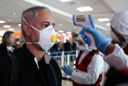

Nuestra gestión en el covid-19
Cuando se declaró oficialmente la pandemia por parte de la ONU y posteriormente por efectos de la misma se declaró emergencia sanitaria en la nación, nuestra aerolínea se comprometió con respetar los reglamentos establecidos y a la vez proteger a nuestros empleados y clientes.
En dicho momento, SurAmerica Airlines ceso indefinidamente las actividades de recepción de pasajeros en los aeropuertos, uso comercial de aviones, etc. Como siempre teniendo el enfoque de respetar el aislamiento individual decretado por el gobierno local y por ende protegiendo la vida de las personas que transitan en nuestras instalaciones.
Durante el inicio del proceso del aislamiento, SurAmerica Airlines se comprometió con un servicio óptimo para los clientes y/o personas que necesitasen información urgente o devolución de algún servicio que no pudo ser completo en sus mejores posibilidades por efectos de la pandemia.
Después, cuando se estaba observando los duros y difíciles momentos que estábamos viviendo todos, nuestra aerolínea se propuso y cumplió la meta de ayudar a la mayor cantidad de personas que lo necesitasen, como lo eran aquellas personas que perdieron sus empleos en el extranjero y necesitaba regresar a sus países de origen, también cuando el gobierno local necesitó urgentemente el transporte de material médico o de personas por tema de la emergencia sanitaría, nuestra aerolínea siempre estuvo presente resguardando la seguridad de las personas y materiales que necesitaba la nación para poder mantener los mejores cuidados y lograr superar estas etapas.